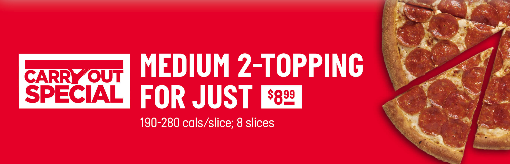
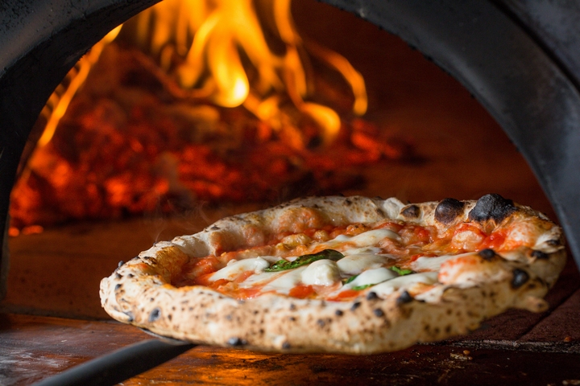

Okotoks Pizzas are made with only the freshest ingredients
like mozzarella, roma tomatoes, made-from-scratch sauce and even features premium toppings like Sorriso Pepperoni, salami from Valbella meats and a healthy Flax crust. You feel good about ordering it.
You feel good about eating it. And you feel even better knowing we're always ready to make you more.
Pizza can be a very controversial topic. We all have our preferences
when it comes to crust thickness, crispiness, the type and distribution of toppings and where the cheese
is layered in relation to the sauce.

Pizza is personal, but whether you’re looking
for a family pizza night or a sophisticated meal, restaurants on this
list are bound to suit your pizza fancy when you’re looking for a slice in Okotoks.